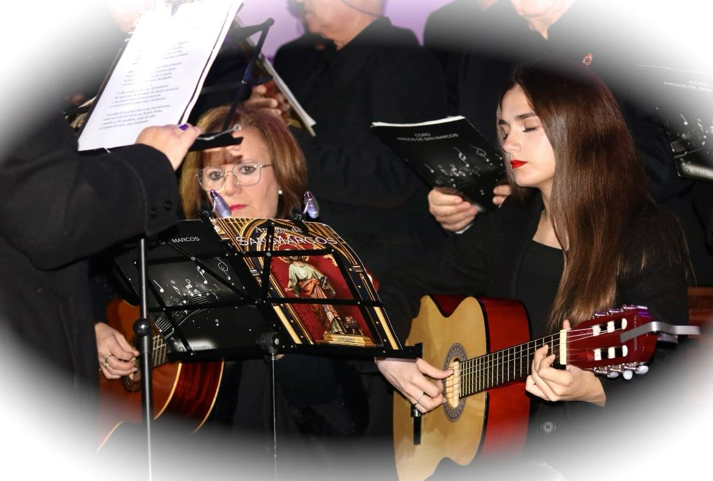
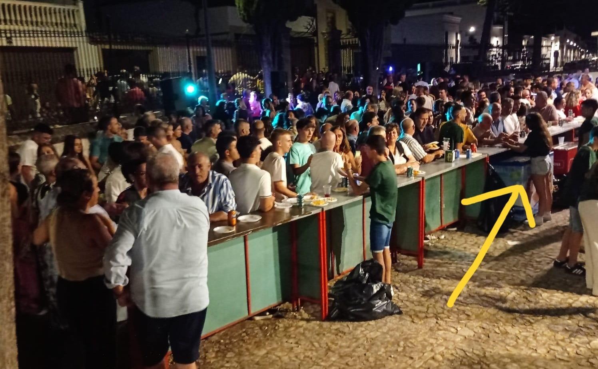

Zetameg para mis amigas, soy brillo y liderazgo como reflejo de mi nombre.
Sobre mí
Holiss! Soy Gema. una chica soñadora y creativa, con una curiosidad constante por aprender cosas nuevas.
Actualemente estoy en 2º de bachillerato, caminando con ilusión hacia mi gran objetivo:
estudiar Medicina y convertirme en cirujana.
Compajino mis estudios con la música, tocando la guitarra y cantando en el coro parroquial de mi localidad: Sabiote
además de cantar en un grupo de música pop con el que actuo en las verbena pequeña de mi localidad, porque creo que
el arte y la ciencia pueden ir de la mano.
También me gustan los animales (sobre todo mi perra jajaja). Se llama Luna y es blanca y negra.
Adjunto foto para que veais esa cara tan mona que tiene.
Mis aficiones!!
En mis ratos de tiempo libre (pocos por que segundo es muy exigente, aunque con una buena organización, siempre hay tiempo para hacer lo que amas)
me dedico a:
Cantar y tocar la guitarra en el coro parroquial de mi pueblo llamado Coro amigos de San Marcos.
También soy vocalista en un grupo pop que tengo con unos amigos de la parroquia.
Me encanta pintar. Mi especialidad es el acrílico y este verano retomé esta faceta con un bodegón.
Además me gusta bailar, he estado bailando desde pequeña hasta el año pasado.
Mis bailes favoritos son los de las Fiestas del Medievo celebradas en mi localidad. ¡Son increíbles!
Salir y hacer planes con mis amigas y pareja.

Traje de dragón de los bailes del medievo.
Proceso del bodegón.
Mi coro y yo en un acto de Santa Teresa de Jesús.
Mis amigas.
Objetivos para el trimestre
Descansar mejor por las noches y no coger el móvil antes de dormir.
Aprender a callar y no ser impulsiva.
Operación MEDICINA!👩⚕️🫀
Difrutar de mis familiares, pareja y amigos como si fuera el último día.
"Empieza por hacer lo necesario, luego lo posible y pronto estarás haciendo lo imposible" -de la Gema del pasado para la Gema del futuro.
Proyectos en los que he participado
Algunos de ellos están los resumidos en la siguiente tabla:
ARTÍSTICOS
De pequeña participe en dos concursos de pintura rápida de Sabiote, y en ambos quedé primera de mi categoría.
Esta es la foto del resultado de la obra de mi segundo año.
COMUNITARIOS
Esta Navidad participé como paje del Rey Baltasar en la cabalgata municial de sus majestades, los Reyes Magos.
Aquí os dejo el enlace de la página de Instagram
oficial del ayuntamiento
para verlo con más detalle.
Participé colaborando de camarera en la barra de la Verbena de verano de San Ginés (soy a la que apunta la flecha amarilla jajaja), ¡Fue todo un éxito!

MUSICALES
Junto a mi coro he participado en un sin fin de proyectos: Encuentros Espirituales de San Juan de la Cruz,
Encuentros Espirituales de Santa Teresa de Jesús, Zambombá navideña, novenas cofrades, bodas, etc.
Ya sabes, si tienes algún evento ¡avísanos!. Os dejo por aquí nuestras redes sociales:
Instagram Coros amigos de San Marcos.
En Facebook, nos llamamos igual😜.